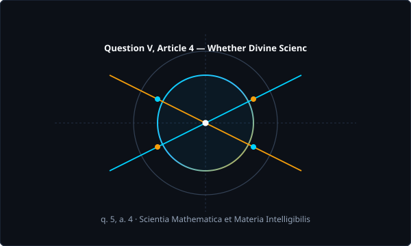

Question V, Article 1 — Whether Speculative Science Is Fittingly Divided into Natural, Mathematical, and Divine¶
Quaestio V, Articulus 1 — De conveniente divisione scientiae speculativae in naturalem, mathematicam et divinam
f. q. 5, a. 1
[pars 3 q. 5 pr.] Here there is a twofold question. The first concerns the division of speculative science, which he sets down in the text. The second concerns the modes which he attributes to the parts of speculative science. Concerning the first, four points are asked.
[pars 3 q. 5 pr. 1] First: Whether the division is fitting whereby speculative science is divided into these three parts: natural, mathematical, and divine.
[pars 3 q. 5 pr. 2] Second: Whether natural philosophy treats of those things that exist in motion and matter.
[pars 3 q. 5 pr. 3] Third: Whether mathematical consideration is without motion and matter concerning those things that exist in matter.
[pars 3 q. 5 pr. 4] Fourth: Whether divine science treats of those things that exist without matter and motion.
[pars 3 q. 5 a. 1 arg. 1] We proceed thus to the first article. It seems that speculative science is unfittingly divided into these parts. For the parts of speculative science are those habits that perfect the contemplative part of the soul. But the Philosopher in Book VI of the Ethics states that the scientific faculty of the soul, which is its contemplative part, is perfected by three habits, namely wisdom, science, and understanding. Therefore these three are the parts of speculative science, and not those set down in the text.
[pars 3 q. 5 a. 1 arg. 2] Furthermore, Augustine says in Book VIII of The City of God that rational philosophy, which is logic, is contained under contemplative or speculative philosophy. Since, therefore, he makes no mention of it, it seems that the division is insufficient.
[pars 3 q. 5 a. 1 arg. 3] Furthermore, philosophy is commonly divided into the seven liberal arts, among which neither natural nor divine philosophy is contained, but only rational and mathematical philosophy. Therefore natural and divine philosophy ought not to have been set down as parts of speculative science.
[pars 3 q. 5 a. 1 arg. 4] Furthermore, the science of medicine seems above all to be operative, and yet within it one part is posited as speculative and another as practical. By the same reason, therefore, in all other operative sciences some part is speculative; and thus mention ought to have been made in this division of ethics or moral philosophy, even though it is active, on account of its speculative part.
[pars 3 q. 5 a. 1 arg. 5] Furthermore, the science of medicine is a certain part of physics, and likewise certain other arts that are called mechanical, such as the science of agriculture, alchemy, and others of this kind. Since, therefore, these are operative, it seems that natural philosophy ought not to have been placed unconditionally under speculative science.
[pars 3 q. 5 a. 1 arg. 6] Furthermore, a whole ought not to be divided over against its part. But divine science seems to stand as a whole with respect to physics and mathematics, since the subjects of the latter are parts of the subject of the former. For the subject of divine science, which is first philosophy, is being, of which mobile substance—which the natural philosopher considers—is a part, and likewise quantity—which the mathematician considers—as is evident in Book III of the Metaphysics. Therefore divine science ought not to be divided over against natural and mathematical science.
[pars 3 q. 5 a. 1 arg. 7] Furthermore, sciences are divided in the same manner as things are, as is said in Book III of On the Soul. Now philosophy treats of being, for it is the knowledge of being, as Dionysius says in his Letter to Polycarp. Since, therefore, being is primarily divided by potency and act, by the one and the many, and by substance and accident, it seems that the parts of philosophy ought to be distinguished by differences of this sort.
[pars 3 q. 5 a. 1 arg. 8] Furthermore, there are many other divisions of beings, concerning which there are sciences, that are more essential than these divisions by mobile and immobile and by abstract and non-abstract—for instance, by corporeal and incorporeal, animate and inanimate, and others of this kind. Therefore the division of the parts of philosophy ought rather to be taken according to differences of this sort than according to those touched upon here.
[pars 3 q. 5 a. 1 arg. 9] Furthermore, that science from which the others take their suppositions ought to be prior to them. Now all other sciences take suppositions from divine science, because it belongs to it to prove the principles of the other sciences. Therefore he ought to have placed divine science in order before the others.
[pars 3 q. 5 a. 1 arg. 10] Furthermore, mathematics presents itself to be learned prior to natural science, inasmuch as boys can easily learn mathematics, whereas only those more advanced can learn natural science, as is said in Book VI of the Ethics. Hence among the ancients this order is said to have been observed in learning the sciences: that men should study first logic, next mathematics, after which natural science, after this moral science, and finally divine science. Therefore he ought to have placed mathematics before natural science. And thus this division seems insufficient.
[pars 3 q. 5 a. 1 s. c. 1] On the contrary, that this division is fitting is proved through the Philosopher in Book VI of the Metaphysics, where he says: Wherefore there will be three philosophical and theoretical sciences: mathematics, physics, and theology.
[pars 3 q. 5 a. 1 s. c. 2] Furthermore, in Book II of the Physics three modes of sciences are set down, which also seem to pertain to these three.
[pars 3 q. 5 a. 1 s. c. 3] Furthermore, Ptolemy also employs this division at the beginning of the Almagest.
[pars 3 q. 5 a. 1 co. 1] I answer that the theoretical or speculative intellect is properly distinguished from the operative or practical intellect in this: that the speculative intellect has for its end the truth which it considers, whereas the practical intellect orders the truth considered toward operation as toward an end. And therefore the Philosopher says in Book III of On the Soul that they differ from one another by their end, and in Book II of the Metaphysics it is said that the end of speculative science is truth, whereas the end of operative science is action. Since, therefore, matter must be proportioned to the end, the matter of the practical sciences must be those things that can be produced by our work, so that knowledge of them can thus be ordered toward operation as toward an end. Conversely, the matter of the speculative sciences must be things that are not produced by our work; hence the consideration of them cannot be ordered toward operation as toward an end. And it is according to the distinction among these things that the speculative sciences must be distinguished.
[pars 3 q. 5 a. 1 co. 2] Yet it must be known that when habits or powers are distinguished according to their objects, they are not distinguished according to just any differences of objects, but according to those that belong per se to the objects insofar as they are objects. For to be an animal or a plant is accidental to a sensible thing insofar as it is sensible, and therefore the distinction of the senses is not taken from this, but rather from the difference of color and sound. Consequently, the speculative sciences must be divided through differences of speculative objects insofar as they are objects of speculation. Now to a speculative object, which is the object of a speculative power, something belongs on the side of the intellective power and something on the side of the habit of science whereby the intellect is perfected. On the side of the intellect, indeed, it belongs to it that it be immaterial, because the intellect itself is also immaterial; while on the side of science it belongs to it that it be necessary, because science is of necessary things, as is proved in Book I of the Posterior Analytics. Now everything necessary, insofar as it is such, is immobile; because everything that is moved, insofar as it is such, is capable of being and not being, either simply or in a certain respect, as is said in Book IX of the Metaphysics. Thus, therefore, separation from matter and motion, or application to them, belongs per se to the speculative object, which is the object of speculative science. And therefore the speculative sciences are distinguished according to the order of removal from matter and motion.
[pars 3 q. 5 a. 1 co. 3] Some speculative objects, therefore, are such that they depend on matter according to being, because they can exist only in matter. And these are subdivided: for some depend on matter both according to being and according to understanding, such as those in whose definition sensible matter is posited; hence they cannot be understood without sensible matter, just as in the definition of man it is necessary to include flesh and bones. And of these treats physics, or natural science. Others, however, are such that, although they depend on matter according to being, they do not depend on it according to understanding, because sensible matter is not posited in their definitions, such as line and number. And of these treats mathematics. Still other speculative objects are such that they do not depend on matter according to being, because they can exist without matter—whether they never exist in matter, such as God and an angel, or in some instances exist in matter and in others do not, such as substance, quality, being, potency, act, the one and the many, and things of this kind. Concerning all of these treats theology, that is, divine science, because foremost among the things known in it is God; by another name it is called metaphysics, that is, beyond physics, because it presents itself to be learned by us after physics, since we must arrive at insensible things from sensible ones. It is also called first philosophy, insofar as all the other sciences, receiving their principles from it, follow after it. Now it is not possible that there should be any things that depend on matter according to understanding and not according to being, because the intellect, considered in itself, is immaterial. And therefore there is no fourth genus of philosophy besides the aforesaid.
[pars 3 q. 5 a. 1 ad 1] To the first objection, therefore, it must be said that the Philosopher in Book VI of the Ethics determines concerning intellectual habits insofar as they are intellectual virtues. Now they are called virtues insofar as they perfect us in their operation, for virtue is that which makes its possessor good and renders his work good; and therefore according as the soul is variously perfected by speculative habits of this sort, he diversifies virtues of this kind. For there is one mode whereby the speculative part of the soul is perfected by understanding, which is the habit of principles, through which certain things become known of themselves, and another mode whereby conclusions demonstrated from principles of this sort are known—whether the demonstration proceeds from lower causes, as in science, or from the highest causes, as in wisdom. When, however, sciences are distinguished insofar as they are certain habits, they must be distinguished according to their objects, that is, according to the things concerning which the sciences treat. And it is thus that both here and in Book VI of the Metaphysics the three parts of speculative philosophy are distinguished.
[pars 3 q. 5 a. 1 ad 2] To the second it must be said that the speculative sciences, as is evident at the beginning of the Metaphysics, treat of those things whose knowledge is sought for their own sake. Now the things of which logic treats are not sought to be known for their own sake, but as a certain aid to the other sciences. And therefore logic is not contained under speculative philosophy as a principal part, but as something reduced to speculative philosophy, insofar as it furnishes speculation with its instruments—namely syllogisms, definitions, and other things of this kind, which we need in the speculative sciences. Hence according to Boethius in his Commentary on Porphyry, it is not so much a science as an instrument of science.
[pars 3 q. 5 a. 1 ad 3] To the third it must be said that the seven liberal arts do not sufficiently divide theoretical philosophy; rather, as Hugh of Saint Victor says in Book III of his Didascalicon, passing over certain others, seven are enumerated together because those who wished to learn philosophy were first instructed in these, and therefore they are distinguished into the trivium and the quadrivium, inasmuch as by these, as by certain pathways, the lively mind may enter into the secrets of philosophy. And this also accords with the words of the Philosopher, who says in Book II of the Metaphysics that the mode of science ought to be sought before the sciences; and the Commentator says in the same place that someone ought to learn logic, which teaches the mode of all the sciences, before all the other sciences, and to logic pertains the trivium. He also says in Book VI of the Ethics that mathematics can be known by boys, whereas physics cannot, since it requires experience. And thus we are given to understand that directly after logic mathematics ought to be learned, to which pertains the quadrivium; and so by these, as by certain pathways, the mind is prepared for the other philosophical disciplines. Or else these among the other sciences are called arts because they possess not only knowledge, but a certain work that belongs immediately to reason itself, such as constructing a syllogism or forming a discourse, numbering, measuring, forming melodies, and computing the courses of the stars. Other sciences, by contrast, either have no work, but knowledge alone, such as divine and natural science—whence they cannot bear the name of art, since art is called productive reason, as is said in Book VI of the Metaphysics—or they have a bodily work, such as medicine, alchemy, and others of this kind. Hence they cannot be called liberal arts, because acts of this sort belong to man on that side wherein he is not free, namely on the side of the body. Moral science, however, although it is for the sake of operation, nevertheless that operation is not the act of science, but rather of virtue, as is evident in the Ethics. Hence it cannot be called an art, but rather in those operations virtue takes the place of art. And therefore the ancients defined virtue as the art of living well and rightly, as Augustine says in Book IV of The City of God.
[pars 3 q. 5 a. 1 ad 4] To the fourth it must be said that, as Avicenna says at the beginning of his Medicine, the theoretical and the practical are distinguished in one way when philosophy is divided into theoretical and practical, in another way when the arts are divided into theoretical and practical, and in another way when medicine is so divided. For when philosophy, or even the arts, are distinguished by theoretical and practical, their distinction must be taken from the end, so that that is called theoretical which is ordered solely to the knowledge of truth, whereas that is called practical which is ordered to operation. Yet there is this difference when the whole of philosophy and when the arts are divided in this way: that in the division of philosophy regard is had to the end of beatitude, toward which the whole of human life is ordered. For as Augustine says in Book XX of The City of God from the words of Varro, man has no other reason for philosophizing except that he may be happy. Hence, since a twofold happiness is posited by the philosophers, one contemplative and the other active, as is evident in Book X of the Ethics, in accordance with this they also distinguished two parts of philosophy, calling moral philosophy practical, and calling natural and rational philosophy theoretical. When, however, certain arts are said to be speculative and others practical, regard is had to certain special ends of those arts, as if we should say that agriculture is a practical art, whereas dialectic is a theoretical one. When, on the other hand, medicine is divided into theoretical and practical, the division is not taken according to the end; for in that way the whole of medicine is contained under practical knowledge, inasmuch as it is ordered to operation. Rather, the aforesaid division is taken according as the things treated in medicine are proximate to, or remote from, operation. For that part of medicine is called practical which teaches the manner of operating for healing, as that such and such remedies are to be applied to such and such abscesses; whereas that part is called theoretical which teaches the principles by which a man is directed in operation, though not proximately, such as that the vital powers are three and that the genera of fevers are so many. Hence it is not necessary that, if some part of an active science is called theoretical, that part should on that account be placed under speculative philosophy.
[pars 3 q. 5 a. 1 ad 5] To the fifth it must be said that one science is contained under another in two ways. In one way, as a part of it, namely because its subject is a certain part of the subject of the other, just as a plant is a certain part of natural body; hence the science of plants is also contained under natural science as a part. In another way, one science is contained under another as subalternated to it, namely when in the higher science the propter quid is assigned for those things of which only the quia is known in the lower science, just as music is placed under arithmetic. Medicine, therefore, is not placed under physics as a part. For the subject of medicine is not a part of the subject of natural science under that precise aspect whereby it is the subject of medicine. For although the healable body is a natural body, nevertheless it is not the subject of medicine insofar as it is healable by nature, but insofar as it is healable by art. Yet because in healing that is also effected through art, art is the minister of nature—since health is brought to completion out of some natural power with the help of art—it follows that the propter quid regarding the operation of art must be taken from the properties of natural things. And on account of this, medicine is subalternated to physics, and for the same reason alchemy, the science of agriculture, and all things of this kind. And thus it remains that physics in itself and in all its parts is speculative, even though certain operative sciences are subalternated to it.
[pars 3 q. 5 a. 1 ad 6] To the sixth it must be said that although the subjects of the other sciences are parts of being, which is the subject of metaphysics, nevertheless the other sciences need not be parts of metaphysics. For each of the sciences takes one part of being according to a special mode of considering, distinct from the mode in which being is considered in metaphysics. Hence, properly speaking, its subject is not a part of the subject of metaphysics; for it is not a part of being according to that intelligible aspect whereby being is the subject of metaphysics, but when considered under this special aspect it is itself a special science shared in division alongside the others. On the other hand, the science that treats of potency, or of act, or of the one, or of anything of this sort could in this sense be called a part of metaphysics, because these possess the same mode of considering as being, which is treated in metaphysics.
[pars 3 q. 5 a. 1 ad 7] To the seventh it must be said that those parts of being demand the same mode of treatment as common being, because they too do not depend on matter; and therefore the science treating of them is not distinguished from the science that treats of common being.
[pars 3 q. 5 a. 1 ad 8] To the eighth it must be said that the other diversities of things upon which the objection touches are not per se differences of those things insofar as they are knowable; and therefore the sciences are not distinguished according to them.
[pars 3 q. 5 a. 1 ad 9] To the ninth it must be said that although divine science is by nature the first of all sciences, nevertheless with respect to us other sciences are prior. For as Avicenna says at the beginning of his Metaphysics, the order of this science is that it should be learned after the natural sciences, in which many things are determined that this science employs, such as generation, corruption, motion, and others of this kind. Similarly, it is learned after the mathematical sciences. For this science needs, for the knowledge of separate substances, to know the number and order of the celestial spheres, which is not possible without astronomy, for which the whole of mathematics is presupposed. Other sciences, such as music, moral sciences, and the like, contribute to its well-being. Nor, however, need there be a circle because metaphysics presupposes things proved in the other sciences while itself proving the principles of the others. For the principles that another science, namely natural science, receives from first philosophy do not prove the things that the first philosopher in turn receives from the natural philosopher; rather, those things are proved through other self-evident principles. And similarly, the first philosopher does not prove the principles that he hands over to the natural philosopher through principles received from him, but through other self-evident principles; and thus there is no circle in definition. Moreover, the sensible effects from which natural demonstrations proceed are better known with respect to us at the outset; but when through them we have arrived at the knowledge of first causes, from these latter there will become manifest to us the propter quid of those effects from which the causes were proved by a demonstration quia. And in this way natural science also contributes something to divine science, and yet through divine science its own principles are made known. And hence it is that Boethius places divine science last, because it is last with respect to us.
[pars 3 q. 5 a. 1 ad 10] To the tenth it must be said that although natural science presents itself to be learned after mathematics, inasmuch as its universal teachings require experience and time, nevertheless natural things, being sensible, are naturally more known than mathematical things abstracted from sensible matter.